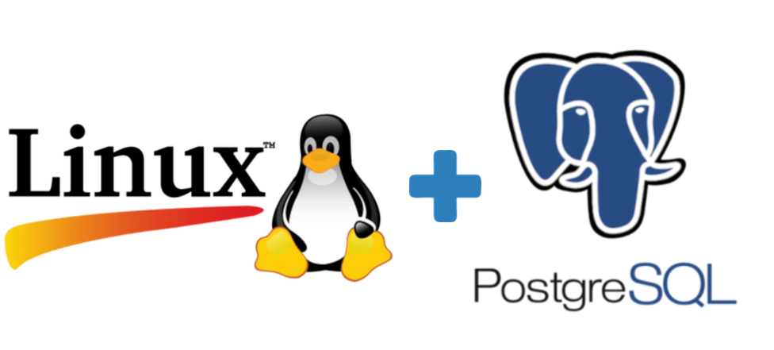
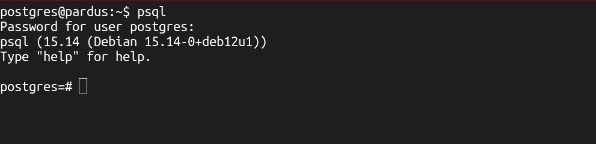

İçindekiler
▸ Veritabanı İstemcisi / psql
▸ Sorgu Tipleri (DDL, DML, DQL, TCL)
▸ Temel Veritabanı İşlemleri
▸ Veri Türleri
▸ Tablo İşlemleri
▸ Veri İşlemleri
▸ Where Kullanımı
▸ Aggregate Fonksiyonları
▸ İndex İşlemleri
▸ Referans İşlemleri
▸ Tarih ve Zaman Fonksiyonları
▸ Metin (String) Fonksiyonları
▸ Transaction İşlemleri
▸ Kullanıcı Yönetimi
▸ Veri Kümesi
▸ Sunucu Ayarları
▸ Sözlük
PostgreSQL, tüm dünyada popüler olan açık kaynak kodlu, platform bağımsız gelişmiş bir nesne ilişkisel (ORDBMS) veritabanı yönetim sistemidir.
Yüksek performanslı, kararlı ve güvenilirdir. Modern kurumsal veritabanı kabiliyet ve özelliklerine sahiptir.
PostgreSQL’in, 1977 yılında başlayan 20 yılı akademik, son 20 yılı endüstride geçen 40 yıllık bir geçmişi olan en eski açık kaynak kodlu yazılımlardan biridir.
PostgreSQL, tüm dünyada kamuda önemli devlet hizmetleri sunan uygulama sistemlerinde (CERN, NASA, Fransa, İngiltere, G.Kore, vb.) finans ve Telekom sektörlerinde iş kritik uygulamalarda, dünyada önde gelen üreticilerin ürünlerinde (Apple, Microsoft, IBM,Amazon, vb.), araştırma merkezleri ve üniversitelerde, küçük ölçekli projelerden çok büyük ölçekli kurumsal altyapılarda güvenilerek kullanılmaktadır.
PostgreSQL, önde gelen ticari veritabanı ürünleri ile rekabet edecek kurumsal veritabanı özelliklerinin yanı sıra günümüz dijital dönüşüm projeleri ve teknolojileri ile uyumlu birçok yeni ve yenilikçi özelliğe sahip-tir (Örneğin; dizi şeklindeki veri tipleri, paralel sorgular, JSON veri tipini desteklemesi ve üzerinde sorgu çalıştırabilmesi).
PostgreSQL, veritabanı ve sistem yöneticileri, yazılım mimarları ve geliştiricileri için çekici gelen yenilikçi birçok özellik sunar.
PostgreSQL’in öğrenmesi, kurulumu, konfigürasyonu, yönetimi, izlemesi ve bakımı kolaydır. Post-greSQL ekosisteminde yönetim ve izleme için açık kaynaklı ve ticari birçok araç vardır.
Paket indexlerini güncelle.
sudo apt update && sudo apt upgrade -y
PsgreSQL kurulumu için Debian/Ubuntu resmi depolarında PostgreSQL paketi hazır olarak geliyor, aşağıdaki komut ile sisteme PostgreSQL sunucusu kurulabilinir :
sudo apt install postgresql -y
PostgreSQL servisini kontrol etmek için terminale:
sudo systemctl status postgresql
Eğer çalışmıyorsa başlatmak için:
sudo systemctl start postgresql
Sistem açılışında otomatik olarak başlaması için:
sudo systemctl enable postgresql
postgres, template0, template1 gibi sistem veritabanlarını oluşturur➡️ PostgreSQL, initdb yapılmadan çalışabilir hale gelmez.
postgresql paketi kurulduğunda/var/lib/postgresql/<sürüm>/main
./configure
make
sudo make install
Bu adımlar:
Bu yüzden manuel initdb yapmak gerekir
initdb -D /usr/local/pgsql/data
veya
/usr/local/pgsql/bin/initdb -D /usr/local/pgsql/data
Bir sistemde init edilmiş mi kontrol için:
ls /var/lib/postgresql
veya
psql -l
Çalışıyorsa → initdb yapılmıştır.
ahmet@pardus:~$ sudo suKomutu ile root kullanıcısına geçilir.root@pardus:~# su - postgresKomutu ile postgres kullanıcısına geçilir.postgres@pardus:~$ psqlKomutu ile PosgreSQL sunucusuna bağlanılır.

Yada PostgreSQL oturumuna kendi kullanıcı hesabınızdan bağlanmak için:
ahmet@pardus:~$ sudo -u postgres psqlNot : PostgreSQL kurulunca varsayılan olarak "postgres" adında bir kullanıcı ve bu kullanıcıya ait "postgres" adında yeni bir veritabanı otomatik olarak gelir.
🔼 Başa Dön
PostgreSQL sunucu interaktif terminal istemcisidir. PostgreSQL sunucuda sorgu çalıştırma, sorgu sonuçlarını görüntüleme, kabuk parametreleri ile dosya veya komut gönderme, betik içerisinde kullanarak otomatik işlemler yaptırabilir.
Genel Kullanımı
psql [seçenekler...] [veritabanı[kullanıcı]]
psql komutu için kullanılan parametreler:| Parametre | Açıklama | Örnek Kullanım |
|---|---|---|
-h | Bağlanılacak sunucunun hostname/IP adresi | psql -h 192.168.1.10 |
-p | PostgreSQL port numarası (varsayılan: 5432) | psql -p 5432 |
-U | Bağlanılacak kullanıcı adı | psql -U postgres |
-d | Bağlanılacak veritabanı adı | psql -d testdb |
-W | Parolayı girmeye zorlar | psql -U user -W |
-f | Bir SQL dosyasını çalıştırır | psql -d db -f script.sql |
-c | Tek bir SQL komutu çalıştırır | psql -d db -c "SELECT * FROM users;" |
-v | Değişken tanımlama | psql -v var=123 -f script.sql |
-X | psql başlangıç dosyası (.psqlrc) yüklenmesin | psql -X |
-A | Hizalamayı kapatır (alignment off) | psql -A -c "SELECT * FROM t" |
-t | Sadece satırları gösterir, başlık/format yok | psql -t -c "SELECT now()" |
-o | Komut çıktısını dosyaya yazdırır | psql -U postgres -d postgres -o sonuc.txt -c "SELECT * FROM ogrenciler;" |
--help veya -? | Yardım ekranı | psql --help veya psql -? |
--version veya -V | Sürüm bilgisini gösterir | psql --version veya psql -V |
Kullanıcı/parola ile TCP üzerinden veritabanına bağlanma:
$ psql -h 127.0.0.1 -U user_name -W -d db_name Password for user user: psql (11.5) Type "help" for help. db_name=>Etkileşimli (interaktif) kabuk kullanma:
psql (11.5) Type "help" for help. postgres=# \c db_name You are now connected to database "db_name" as user "postgres". db_name=# SELECT * FROM table_name;
Etkileşimsiz kabuk kullanma (dışardan komut yollama):
$ psql -U user_name -c 'SELECT * FROM table_name;' db_nameÇıktıyı dosyaya kaydetme:
$ psql -U user_name -c 'SELECT * FROM table_name;' db_name > sonuc
Komut çıktısını kullanma (pipe):
$ echo '\c db_name \\ SELECT * FROM table_name;' | psql
Dosyayı girdi olarak kullanma:
$ psql -U user_name db_name < sorgu.sql
Öntanımlı olarak sql sorgularının çıktıları sql biçeminde gelir psql üzerinden csv biçiminde çıktı almak için:
$ psql -U user_name -d db_name -A -F"," -c "select * from table_name;" > dosya.csv
psql istemci temel komutları:| Komut | Açıklama | Komut | Açıklama |
|---|---|---|---|
\l | Veritabananlarını listeleme | \q | Çıkış |
\c | Belirtilen veritabanına geçme | \help (\?) | Yardım |
\dt | Tabloları listeleme | \copyright | Lisans bilgileri |
\dT | Veri tiplerini listeleme | \conninfo | Sunucu bağlantı bilgileri |
\du (\dg) | Veritabanı rol/kullanıcı listeleme | \password | Rol parolası belirleme |
\dx | Yüklü olan eklentileri listeleme | \encoding | Tanımlı olan karakter kodlaması |
\dn | Mevcut şemaları listeleme | \s | Geçmiş komutları listeleme |
🔼 Başa Dön
PostgreSQL’de sorgu tiplerini dört grupta incelemek mümkündür:
PostgreSQL’de DDL (Data Definition Language) komutları, veritabanı nesnelerinin yapısını tanımlamak ve değiştirmek için kullanılan SQL komutlarıdır. Veri üzerinde değil, şema (schema) üzerinde çalışır.
Yeni nesne oluşturur.
CREATE TABLE kullanicilar (
id SERIAL PRIMARY KEY,
ad VARCHAR(50),
email VARCHAR(100)
);
Oluşturulabilinen nesneler:
Mevcut nesnenin yapısını değiştirir.
-- kullanıcılar tablosuna yas adında kolon ekler.
ALTER TABLE kullanicilar
ADD COLUMN yas INT;
-- kullanıcılar tablosundaki ad kolonunu boş (null) değer kabul etmez hale getirir
ALTER TABLE kullanicilar
ALTER COLUMN ad SET NOT NULL;
Nesneyi tamamen siler.
DROP TABLE kullanicilar;
DROP TABLE kullanicilar CASCADE;
Tablodaki tüm veriyi hızlıca boşaltır (yapı kalır).
TRUNCATE TABLE kullanicilar;
Constraint’ler, tabloya girilen verinin doğruluğunu ve tutarlılığını garanti altına alan kurallardır. PostgreSQL’de constraint’ler DDL ile tanımlanır.
UNIQUE ve NOT NULL kısıtlarına aynı anda uyacağını garanti eder.id SERIAL PRIMARY KEY
veya
CONSTRAINT pk_kullanici PRIMARY KEY (id)
CREATE TABLE example (
a integer,
b integer,
c integer,
email VARCHAR(100) UNIQUE
);
Bu kısıt, herhangi bir kolon tanımında yazılabileceği gibi tablo tanımlaması içinde parantez içinde kısıtın kontrol edeceği kolonları listeleyerek de yazılabilir.
CREATE TABLE example (
a integer,
b integer,
c integer,
UNIQUE (a, c)
);
NOT NULL kısıtı olan kolonun boş bırakılmasının önüne geçer.ad VARCHAR(50) NOT NULL
CREATE TABLE siparisler (
id SERIAL PRIMARY KEY,
kullanici_id INT REFERENCES kullanicilar(id)
);
Detaylı hali:
CONSTRAINT fk_kullanici
FOREIGN KEY (kullanici_id)
REFERENCES kullanicilar(id)
ON DELETE CASCADE
ON UPDATE CASCADE
CHECK kuralıyla test edilir ve TRUE dönen değerlerin tabloya yazılmasına izin verir.yas INT CHECK (yas >= 18)
CREATE TABLE products (
product_no integer,
name text,
price numeric DEFAULT 9.99
);
EXCLUDE USING gist (
oda_id WITH =,
tarih WITH &&
);
ALTER TABLE kullanicilar
ADD CONSTRAINT uq_email UNIQUE (email);
ALTER TABLE kullanicilar
DROP CONSTRAINT uq_email;
| DDL Komutu | Constraint ile İlişkisi |
|---|---|
| CREATE | Constraint tanımlar |
| ALTER | Constraint ekler/siler |
| DROP | Constraint’leri de siler |
| TRUNCATE | Constraint’leri tetiklemez |
PostgreSQL’de DML (Data Manipulation Language) komutları, tablodaki veriyi eklemek, güncellemek, silmek ve okumak için kullanılır. Yani yapıyı değil (DDL), verinin kendisini yönetir.
| Komut | Açıklama |
|---|---|
SELECT | veri çekme |
INSERT | veri ekleme |
UPDATE | veri güncelleme |
DELETE | veri silme |
SELECT * FROM kullanicilar;
Belirli kolon:
SELECT ad, soyad FROM kullanicilar;
Koşullu:
SELECT * FROM kullanicilar
WHERE id = 1;
INSERT INTO kullanicilar (ad, soyad)
VALUES ('Ahmet', 'Yılmaz');
Birden fazla:
INSERT INTO kullanicilar (ad, soyad)
VALUES
('Ali', 'Kaya'),
('Veli', 'Demir');
UPDATE kullanicilar
SET ad = 'Mehmet'
WHERE id = 1;
⚠️ WHERE olmazsa:
UPDATE kullanicilar SET ad = 'X';
👉 tüm tablo değişir
DELETE FROM kullanicilar
WHERE id = 1;
⚠️ WHERE olmazsa:
DELETE FROM kullanicilar;
👉 tüm veri silinir (tablo durur)
PostgreSQL’e özel güçlü özellik:
INSERT INTO kullanicilar (ad)
VALUES ('Ahmet')
RETURNING *;
Eklenen veriyi geri döner.
INSERT INTO kullanicilar (id, ad)
VALUES (1, 'Ahmet')
ON CONFLICT (id)
DO UPDATE SET ad = EXCLUDED.ad;
| Tür | Amaç |
|---|---|
| DML | veri ile oynar |
| DDL | tablo yapısı |
DML = veriyi yönetir
PostgreSQL’de DQL (Data Query Language) dediğimiz şey temelde veri okuma / sorgulama işlemleridir. Ana komut:
SELECT
Ama bunun etrafında kullanılan birçok alt yapı var. Hepsini sistematik şekilde veriyorum.
SELECT * FROM tablo_adi;
Örnek:
SELECT * FROM students;
SELECT name, surname FROM students;
SELECT * FROM students WHERE id = 1;
SELECT * FROM students WHERE age > 18;
= eşit
!= eşit değil
> büyük
< küçük
>= büyük eşit
<= küçük eşit
SELECT * FROM students
WHERE age > 18 AND gender = 'E';
SELECT * FROM students
WHERE age < 18 OR age > 25;
SELECT * FROM students WHERE name LIKE 'A%';
| Pattern | Anlam |
|---|---|
| A% | A ile başlayan |
| %a | a ile biten |
| %ah% | içinde "ah" geçen |
SELECT * FROM students ORDER BY age;
SELECT * FROM students ORDER BY age DESC;
SELECT * FROM students LIMIT 5;
SELECT * FROM students LIMIT 5 OFFSET 5;
SELECT COUNT(*) FROM students;
SELECT AVG(age) FROM students;
SELECT SUM(score) FROM students;
SELECT gender, COUNT(*)
FROM students
GROUP BY gender;
SELECT gender, COUNT(*)
FROM students
GROUP BY gender
HAVING COUNT(*) > 5;
SELECT DISTINCT gender FROM students;
SELECT s.name, c.course_name
FROM students s
JOIN courses c ON s.course_id = c.id;
SELECT s.name, c.course_name
FROM students s
LEFT JOIN courses c ON s.course_id = c.id;
SELECT * FROM students WHERE id IN (1,2,3);
SELECT * FROM students WHERE age BETWEEN 18 AND 25;
SELECT name AS isim FROM students;
SELECT * FROM students
WHERE id IN (SELECT student_id FROM exams);
DQL sadece veri okur:
| Dil | Açıklama |
|---|---|
| DQL | SELECT |
| DML | INSERT, UPDATE, DELETE |
| DDL | CREATE, DROP |
| DCL | GRANT |
TCL (Transaction Control Language), veritabanında yapılan işlemleri (transaction) onaylama, geri alma ve yönetme için kullanılır. Özellikle PostgreSQL gibi ACID uyumlu sistemlerde kritik öneme sahiptir.
COMMIT
ROLLBACK
SAVEPOINT
Yapılan işlemleri veritabanına kesin olarak kaydeder.
BEGIN;
INSERT INTO students (name) VALUES ('Ahmet');
COMMIT;
✔ COMMIT sonrası:
Transaction içindeki işlemleri iptal eder.
BEGIN;
INSERT INTO students (name) VALUES ('Mehmet');
ROLLBACK;
✔ Sonuç:
Transaction içinde geri dönülebilir checkpoint oluşturur.
BEGIN;
INSERT INTO students (name) VALUES ('Ali');
SAVEPOINT nokta1;
INSERT INTO students (name) VALUES ('Veli');
ROLLBACK TO nokta1;
COMMIT;
✔ Sonuç:
Savepoint’i kaldırır:
RELEASE SAVEPOINT nokta1;
PostgreSQL’de:
BEGIN;
veya
START TRANSACTION;
| Tür | Açıklama |
|---|---|
| Auto-commit | Her sorgu otomatik commit |
| Manual | BEGIN ile başlatılır |
TCL’nin amacı:
| Özellik | Açıklama |
|---|---|
| Atomicity | ya hep ya hiç |
| Consistency | veri tutarlı |
| Isolation | işlemler birbirini etkilemez |
| Durability | veri kalıcı |
Para transferi:
BEGIN;
UPDATE hesap SET bakiye = bakiye - 100 WHERE id = 1;
UPDATE hesap SET bakiye = bakiye + 100 WHERE id = 2;
COMMIT;
❌ hata olursa:
ROLLBACK;
conn.autocommit = False
cur.execute("INSERT INTO students (name) VALUES ('Ahmet')")
conn.commit() # COMMIT
# conn.rollback() # ROLLBACK
| Komut | İşlev |
|---|---|
| COMMIT | kalıcı yap |
| ROLLBACK | geri al |
| SAVEPOINT | ara kayıt |
| BEGIN | transaction başlat |
🔼 Başa Dön
Mevcut veritabanlarını listeleme:
postgres=# \l
List of databases
Name | Owner | Enc. | Collate | Ctype | Access
privileges
-----------+----------+------+-------------+-------------+--------------+
postgres | postgres | UTF8 | en_US.UTF-8 | en_US.UTF-8 |
template0 | postgres | UTF8 | en_US.UTF-8 | en_US.UTF-8 | =c/postgres +
postgres=CTc/postgres
template1 | postgres | UTF8 | en_US.UTF-8 | en_US.UTF-8 | =c/postgres +
postgres=CTc/postgres
(3 rows)
Yeni bir veritabanı oluşturma:
postgres=# CREATE DATABASE db_name;
CREATE DATABASE
\c db_name: Diğer veritabana geçiş için kullanılır.\c db_name user_name: Diğer veritabana kullanıcısı ile geçiş yapar.\l+: Mevcut veritabanlarının listesine, size, tablespace ve description alanlarınıda dahil eder.\i dosya: PostgreSQL sunucusuna bağlandığın konumda bulunan script dosyasını çalıştırır.
Sahip belirterek veritabanı oluşturma:
postgres=# CREATE DATABASE db_name OWNER user_name;
CREATE DATABASE
postgres=# CREATE DATABASE db_name
WITH
OWNER = postgres
TEMPLATE = template0
ENCODING = 'UTF8'
LC_COLLATE = 'C'
LC_CTYPE = 'C'
CONNECTION LIMIT = 20;
Veritabanı sahipliğini değiştirmek için:
postgres=# ALTER DATABASE db_name OWNER TO user_name;
ALTER DATABASE
Veritabanının ismini değiştirmek için:
postgres=# ALTER DATABASE db_name RENAME TO new_db_name;
ALTER DATABASE
Veritabanını silmek için:
postgres=# DROP DATABASE db_name;
DROP DATABASE
SELECT datname FROM pg_database;: Sistemdeki mevcut veritabanlarını listeleme sorgusu.
SELECT usesysid, usename FROM pg_user;: Sistemdeki kullanıcıların, id ve kullanıcıadı bilgileri listelenir.
SELECT * FROM pg_stat_activity WHERE datname='postgres';: Adı verilen veritabanına bağlı connectionları listeler.
🔼 Başa Dön
| Veri Türü | Kapladığı Boyut | Min / Max Değeri | Örnek Kullanım |
|---|---|---|---|
| smallint | 2 byte | –32768 → 32767 | age smallint |
| integer (int) | 4 byte | –2,147,483,648 → 2,147,483,647 | id int |
| bigint | 8 byte | –9,22e18 → 9,22e18 | population bigint |
| decimal / numeric(p,s) | Değişken (yakl. 2 byte / 4 digit) | Hassasiyet sınırsız | price numeric(12,2) |
| real (kayan noktalı) sayı | 4 byte | ~6 hane hassasiyet | temperature real |
| double precision (kayan noktalı) sayı | 8 byte | ~15 hane hassasiyet | rating double precision |
| serial | 4 byte (int) | Otomatik artan tamsayı | id serial |
| bigserial | 8 byte | Daha büyük otomatik artan tamsayı | id bigserial |
| Veri Türü | Boyut | Max Uzunluk | Örnek |
|---|---|---|---|
| text | Değişken (1B–1GB) | 1 GB (yaklaşık) | description text |
| varchar(n) | Değişken | n karakter | name varchar(255) |
| char(n) | n byte | n karakter (sabit) | code char(10) |
| varchar (sınırsız) | Değişken | 1 GB | name varchar |
| citext | Değişken | 1 GB | email citext (büyük/küçük duyarsız) |
| Tür | Boyut | Açıklama |
|---|---|---|
| boolean | 1 byte | true / false |
Örnek:
is_active boolean
| Veri Türü | Boyut | Aralık | Örnek |
|---|---|---|---|
| date | 4 byte | MÖ 4713 – MS 5874897 | birthdate date |
| time | 8 byte | 00:00 → 24:00 | start_at time |
| time with time zone | 12 byte | start_at timetz | |
| timestamp | 8 byte | MÖ 4713 – MS 294276 | created_at timestamp |
| timestamptz | 8 byte | created_at timestamptz | |
| interval | 16 byte | ±178 milyon yıl | duration interval |
| Tür | Boyut | Max | Örnek |
|---|---|---|---|
| json | Değişken | 1 GB | data json |
| jsonb | Değişken | 1 GB | meta jsonb |
| Tür | Boyut | Limit | Örnek |
|---|---|---|---|
| int[] , text[] , varchar[] | Değişken | Her eleman max 1 GB | tags text[] |
Dizi elemanları kendi veri türünün boyutuna bağlıdır.
| Tür | Boyut | Açıklama | Örnek |
|---|---|---|---|
| uuid | 16 byte | Global benzersiz kimlik | id uuid DEFAULT gen_random_uuid() |
| Tür | Boyut | Örnek |
|---|---|---|
| money | 8 byte | amount money |
(Tavsiye edilen numeric(12,2))
| Tür | Boyut | Limit | Örnek |
|---|---|---|---|
| bytea | Değişken | 1 GB | file bytea |
Dosya, resim, video saklamak için.
| Tür | Boyut | Açıklama |
|---|---|---|
| inet | 7–19 byte | IP adresi |
| cidr | 7–19 byte | IP blokları |
| macaddr | 6 byte | MAC adresi |
| macaddr8 | 8 byte | |
| tsvector | Değişken | Full-text search |
| tsquery | Değişken | Text search |
| point | 16 byte | (x,y) |
| line | 32 byte | Sonsuz çizgi |
| lseg | 32 byte | Çizgi parçası |
| box | 32 byte | Dikdörtgen |
| circle | 24 byte | Daire |
| polygon | Değişken | Çokgen |
| enum | 4 byte | Sabit değerler |
Örnek enum:
CREATE TYPE status AS ENUM ('active','passive');
| Tür | Boyut | Limit |
|---|---|---|
| xml | Değişken | 1 GB |
| Tür | Boyut | Açıklama |
|---|---|---|
| oid | 4 byte | Sistem nesne ID’si |
| regclass, regtype, regproc ... | 4 byte | Sistem referansları |
🔼 Başa Dön
Bir veritabanı içinde yeni bir tablo oluşturma:
postgres=# CREATE TABLE personel (
id INT PRIMARY KEY,
ad VARCHAR(40),
soyad VARCHAR(40),
kidem INT
);
CREATE TABLE
Tabloları listeleme:
postgres=# \dt
List of relations
Schema | Name | Type | Owner
--------+----------+-------+----------
public | personel | table | postgres
(1 row)
Tablonun ismini değiştirmek için:
postgres=# ALTER TABLE tablo_adı RENAME TO yeni_tablo_adı;
ALTER TABLE
Tablo silme:
postgres=# DROP TABLE tablo_adı;
DROP TABLE
Tablo sahipliğini değiştirmek için:
postgres=# CREATE USER yildirim;
CREATE ROLE
postgres=# ALTER TABLE personel OWNER TO yildirim;
ALTER TABLE
postgres=# \dt
List of relations
Schema | Name | Type | Owner
--------+----------+-------+-------
public | personel | table | yildirim
Not : PostgreSQL’de bir tablo sahibini tablo oluşmadan belirlemek mümkün değildir. Tablo, onu oluşturan kullanıcıya aittir.
Tablo yapısını gösterme:
postgres=# \d personel
Table "public.personel"
Column | Type | Modifiers
--------+-----------------------+-----------
id | integer | not null
ad | character varying(40) |
soyad | character varying(40) |
kidem | integer |
Indexes:
"personel_pkey" PRIMARY KEY, btree (uid)
Tabloyu düzenleme: Yeni sütun ekleme:
postgres=# ALTER TABLE public.personel
ADD COLUMN yas INT;
Tabloyu düzenleme: Bir sütunun tipini değiştirme:
postgres=# ALTER TABLE public.personel
ALTER COLUMN ad TYPE character varying (50);
Tabloyu düzenleme: Bir sütun silme:
postgres=# ALTER TABLE public.personel
DROP COLUMN kidem;
Tabloyu düzenleme: Bir sütunun adını değiştirme:
postgres=# ALTER TABLE tablo_adi
RENAME COLUMN eski_isim TO yeni_isim;
CREATE TABLE kullanicilar (
id INTEGER GENERATED ALWAYS AS IDENTITY PRIMARY KEY,
ad VARCHAR(50) NOT NULL,
soyad VARCHAR(50) NOT NULL,
kullanici_adi VARCHAR(50) UNIQUE NOT NULL,
e_posta VARCHAR(100) UNIQUE NOT NULL,
sifre TEXT NOT NULL,
telefon VARCHAR(20),
dogum_tarihi DATE,
aktif BOOLEAN DEFAULT true,
kayit_tarihi TIMESTAMP DEFAULT CURRENT_TIMESTAMP
);
Kolonların Açıklaması
| Kolon | Açıklama |
|---|---|
id | Birincil anahtar (otomatik artan) |
ad | Kullanıcının adı |
soyad | Kullanıcının soyadı |
kullanici_adi | Sistemde benzersiz kullanıcı adı |
e_posta | E-posta adresi (benzersiz) |
sifre | Şifre (hashlenmiş olmalı) |
telefon | Telefon numarası |
dogum_tarihi | Doğum tarihi |
aktif | Kullanıcı aktif mi |
kayit_tarihi | Sisteme kayıt zamanı |
_ alt tire (örn. stok_miktari)PRIMARY KEY + UNIQUE mutlaka tanımlasnake_case)customers, orders)first_name, email)oid'nin ne olduğunu hatırlamak zororder, select, table isim olarak sorunlu)müşteri_adı yerine musteri_adi veya first_name)CSV içeriğini içe aktarmak için öncelikle csv dosyasındaki kolon adları ile birebir yeni bir tablo oluşturulmalı:
ad, soyad, kullanici_adi, e_posta, sifre, telefon,
dogum_tarihi, aktif, kayit_tarihi
id kolonu bilinçli olarak yok
→ PostgreSQL IDENTITY / SERIAL otomatik artankullanici_adi, e_posta)BOOLEAN, DATE, TIMESTAMP uyumlu1. Sunucu Tarafında (COPY)
COPY kullanicilar (
ad, soyad, kullanici_adi, e_posta, sifre,
telefon, dogum_tarihi, aktif, kayit_tarihi
)
FROM '/path/kullanicilar.csv'
DELIMITER ','
CSV HEADER;
2. Client Tarafında (psql → \copy)
\copy kullanicilar (
ad, soyad, kullanici_adi, e_posta, sifre,
telefon, dogum_tarihi, aktif, kayit_tarihi
)
FROM 'kullanicilar.csv'
CSV HEADER;
Not : GUI uyumlu yazılımlarda tabloyu oluşturduktan sonra tabloya sağ tıklayıp csv dosyasını import edebilirsiniz.
🔼 Başa Dön
Tabloya bir satır ekleme:
postgres=# INSERT INTO personel VALUES (01, 'John', 'Doe', 5);
INSERT 0 1
-- Sadece belirli kolonlar için ekleme yapılacak ise:
postgres=# INSERT INTO personel (ad, soyad) VALUES ('John', 'Doe');
INSERT 0 1
Tabloya birden fazla satır ekleme:
postgres=# INSERT INTO personel VALUES
(02, 'Jane', 'Doe', 1),
(03, 'Richard', 'Roe', 3),
(04, 'Fred', 'Bloggs', 7),
(05, 'Juan', 'Perez', 11);
INSERT 0 4
Satır sorgulama:
postgres=# SELECT * FROM personel;
ad | soyad | kidem | uid
---------+--------+-------+-----
John | Doe | 5 | 1
Jane | Doe | 1 | 2
Richard | Roe | 3 | 3
Fred | Bloggs | 7 | 4
Juan | Perez | 11 | 5
(5 rows)
postgres=# SELECT ad, soyad FROM personel;
ad | soyad
---------+--------
John | Doe
Jane | Doe
Richard | Roe
Fred | Bloggs
Juan | Perez
(5 rows)
Not: Tüm sütunları seçmek için yıldız(*) kullanılır. Fakat kayıt sayısı ve kolon sayısı fazla olan tablolarda yıldız(*) kullanmak kaynak israfına yol açar.
Sütun Güncelleme:
postgres=# UPDATE ogrenciler SET email='ersin-dari@yahoo.com' WHERE id=7;
UPDATE 1
Not :
WHEREile koşul belirtmezsekogrencilertablosundaki bütün
Satır silme:
postgres=# DELETE FROM ogrenciler WHERE id=7;
DELETE 1
Not :
WHEREile koşul belirtmezsekogrencilertablosundaki bütün kayıtlar silinir.
PostgreSQL’de TRUNCATE komutu, bir tabloyu çok hızlı şekilde tamamen boşaltmak için kullanılır. DELETE’e göre daha performanslıdır.
Temel Kullanım
TRUNCATE TABLE tablo_adi;
Tablodaki tüm satırları siler, tablo yapısı korunur.
Birden Fazla Tablo
TRUNCATE TABLE tablo1, tablo2;
İlişkili tabloları aynı anda temizlemek için kullanışlıdır.
FOREIGN KEY İlişkileri
Varsayılan Davranış (RESTRICT)
Foreign key bağı varsa hata verir.
ERROR: cannot truncate a table referenced in a foreign key constraint
CASCADE ile bağlı tablolar da otomatik temizlenir.
TRUNCATE TABLE ana_tablo CASCADE;
| Özellik | TRUNCATE | DELETE |
|---|---|---|
| Hız | Çok hızlı | Yavaş |
| WHERE koşulu | ❌ Yok | ✅ Var |
| Trigger çalışır mı | ❌ Hayır | ✅ Evet |
| ROLLBACK | ✅ Var | ✅ Var |
| Sequence sıfırlama | Opsiyonel | ❌ Yok |
SELECT
country_id || ': ' || country
FROM countries;
SELECT
customer_id || ': ' || first_name || ' ' || last_name
FROM customers;
PostgreSQL’de ALIAS (takma ad), tablo veya kolon adlarını geçici olarak yeniden adlandırmak için kullanılır. Amaç sorguyu daha okunabilir, kısa ve özellikle JOIN’lerde daha net hale getirmektir.
1. Kolon (Column) Alias Kullanımı
Temel Sözdizmi
SELECT kolon_adı AS alias_adı
FROM tablo_adı;
ASopsiyoneldir, yazılmasa da çalışır.
alias_adıboşluk içerecek ise çift tırnaklar arasına yazılmalıdır.
Örnekler
SELECT
first_name AS ad,
last_name AS soyad
FROM users;
SELECT
salary * 12 aylik_maas
FROM employees;
2. Tablo (Table) Alias Kullanımı
Temel Sözdizimi
SELECT * FROM tablo_adı AS t;
Örnek
SELECT u.username, u.email
FROM users AS u;
➡️ Bundan sonra users.username yerine u.username kullanılır.
ORDER BY, sorgu sonuçlarını belirli bir kolona veya ifadeye göre sıralamak için kullanılır.
Temel Sözdizimi
SELECT
kolon1, kolon2
FROM tablo_adı
ORDER BY kolon_adı;
Varsayılan olarak sıralama artan (ASC) şeklindedir.
Artan (ASC) ve Azalan (DESC) Sıralama
-- Artan sıralama (varsayılan)
SELECT * FROM users
ORDER BY age ASC;
-- Azalan sıralama
SELECT * FROM users
ORDER BY age DESC;
Birden Fazla Kolona Göre Sıralama
Önce department kolonunu artan sırada, aynı department içindekileri ise salary'e göre azalan sıra ile sıralar:
SELECT * FROM employees
ORDER BY department ASC, salary DESC;
Kolon Sıra Numarası ile Sıralama
SELECT listesindeki kolonların sıra numarası kullanılabilir:
SELECT name, age, city FROM users
ORDER BY 2 DESC; -- age kolonu
⚠️ Okunabilirlik açısından genellikle kolon adı kullanılması önerilir.
Metinlerde Büyük/Küçük Harfe Duyarsız Sıralama
SELECT * FROM users
ORDER BY LOWER(username);
NULL Değerlerin Sıralanması
PostgreSQL'de varsayılan davranış:
ASC → NULL en sondaDESC → NULL en baştaManuel Kontrol
-- NULL 'ları en sona alır
SELECT * FROM products
ORDER BY price ASC NULLS LAST;
-- NULL 'ları en başa alır
SELECT * FROM products
ORDER BY price DESC NULLS FIRST;
Birleştirerek Kullanım
SELECT
first_name || ' ' || last_name AS full_name
FROM customers
ORDER BY full_name;
Hesaplanan Değer ile Sıralama
SELECT
name, price, quantity, price * quantity AS total
FROM orders
ORDER BY total DESC;
ORDER BY + LIMIT
-- En pahalı 5 ürün
SELECT * FROM products
ORDER BY price DESC
LIMIT 5;
ORDER BY Nerede Kullanılır?
ORDER BY her zaman sorgunun en sonunda yer alır:
SELECT ...
FROM ...
WHERE ...
GROUP BY ...
HAVING ...
ORDER BY ...
LIMIT ...;
Özet
ORDER BY → sonuçları sıralarASC / DESC → artan / azalanNULLS FIRST | LAST ile NULL kontrol edilirorder by kullanımı kaynak israfına yol açar, ferformans için büyük tablolarda index kullanımı önemlidirDISTINCT, sorgu sonucundaki tekrar eden (duplicate) kayıtları kaldırmak için kullanılır. Sadece benzersiz (unique) satırları döndürür.
Temel Sözdizimi
SELECT DISTINCT sütun_adı
FROM tablo_adı;
Örnek Tablo ogrenciler
| id | sehir |
|---|---|
| 1 | Ankara |
| 2 | İstanbul |
| 3 | Ankara |
| 4 | İzmir |
| 5 | İstanbul |
Tek Sütunda DISTINCT
SELECT DISTINCT sehir
FROM ogrenciler;
Sonuç
| sehir |
|---|
| Ankara |
| İstanbul |
| İzmir |
Aynı şehirler yalnızca bir kez listelenir.
Birden Fazla Sütunda DISTINCT
SELECT DISTINCT ad, sehir
FROM musteriler;
Bu kullanımda PostgreSQL, her sütunu ayrı ayrı değil, sütunların birleşimini değerlendirir. Aynı ad + sehir kombinasyonları tek satıra düşürülür.
COUNT(DISTINCT)
Tekrarsız değerlerin sayısını bulmak için kullanılır.
SELECT COUNT(DISTINCT sehir)
FROM ogrenciler;
Sonuç
3
Çünkü tabloda yalnızca:
şehirleri bulunmaktadır.
PostgreSQL'e Özgü: DISTINCT ON
DISTINCT ON, belirli bir sütuna göre ilk kaydı döndürür.
SELECT DISTINCT ON (sehir)
sehir,
id
FROM ogrenciler
ORDER BY sehir, id;
Sonuç
| sehir | id |
|---|---|
| Ankara | 1 |
| İstanbul | 2 |
| İzmir | 4 |
Her şehir için yalnızca ilk kayıt getirilir.
En Büyük ID'yi Getirme
SELECT DISTINCT ON (sehir)
sehir,
id
FROM ogrenciler
ORDER BY sehir, id DESC;
Bu kez her şehir için en büyük id değerine sahip kayıt döndürülür.
DISTINCT ve ORDER BY
SELECT DISTINCT sehir
FROM ogrenciler
ORDER BY sehir;
Sonuçlar sıralı olarak döndürülür.
Özet
| Kullanım | Açıklama |
|---|---|
SELECT DISTINCT sütun | Tekrarsız değerleri getirir |
SELECT DISTINCT sütun1, sütun2 | Benzersiz sütun kombinasyonlarını getirir |
COUNT(DISTINCT sütun) | Tekrarsız kayıt sayısını verir |
DISTINCT ON (sütun) | Her grup için ilk satırı getirir (PostgreSQL'e özeldir) |
Not:
DISTINCT ONkullanırken, belirtilen sütunlarORDER BYifadesinin en solunda yer almalıdır. Aksi halde PostgreSQL hata verir.
🔼 Başa Dön
PostgreSQL’de WHERE ifadesi, sorgu sonucunu belirli koşullara göre filtrelemek için kullanılır.
Temel Kullanım
SELECT * FROM table_name
WHERE kosul;
Örnek:
SELECT * FROM users
WHERE age = 25;
→ Yaşı 25 olan kayıtları getirir.
Örnek:
--
select * from actor
where first_name = 'Penelope';
--
select * from customer
where store_id = 1;
--
select * from payment
where staff_id <> 2;
---
select * from film
where length >= 100;
| Operatör | Açıklama |
|---|---|
= | Eşittir |
!= veya <> | Eşit değil |
> | Büyük |
< | Küçük |
>= | Büyük eşit |
<= | Küçük eşit |
Örnek:
SELECT name, salary FROM employees
WHERE salary >= 50000;
AND, OR, NOT)SELECT * FROM orders
WHERE status = 'paid'
AND total_amount > 1000;
SELECT * FROM users
WHERE city = 'Ankara'
OR city = 'İstanbul';
SELECT * FROM users
WHERE NOT is_active;
BETWEEN KullanımıBelirli bir aralık için:
SELECT * FROM orders
WHERE order_date
BETWEEN '2024-01-01' AND '2024-12-31';
IN KullanımıBirden fazla değeri kontrol etmek için:
SELECT * FROM products
WHERE category
IN ('Elektronik', 'Bilgisayar', 'Telefon');
LIKE ve ILIKE (Metin Arama)% → herhangi bir karakter dizisi_ → tek karakter-- kullanıcı ismi `ahmet` ile başlayan kayıtlar
SELECT * FROM users
WHERE username LIKE 'ahmet%';
-- kullanıcı ismi `can` ile bitmeyen kayıtlar
SELECT * FROM users
WHERE username NOT LIKE '%can';
ILIKE → büyük/küçük harf duyarsızdırSELECT * FROM users
WHERE email ILIKE '%gmail.com';
IS NULL / IS NOT NULLSELECT * FROM users
WHERE phone IS NULL;
SELECT * FROM users
WHERE phone IS NOT NULL;
WHERESELECT * FROM logs
WHERE created_at >= NOW() - INTERVAL '7 days';
-- fiyat beşyüzden küçük olan ürünler listelenir.
SELECT * FROM products
WHERE price < 500;
-- fiyat * miktar binden büyük olan ürünler listelenir.
SELECT * FROM products
WHERE price * quantity > 1000;
WHERESELECT * FROM employees
WHERE department_id IN (
SELECT id
FROM departments
WHERE name = 'IT'
);
Performans Notu
WHERE koşulunda kullanılan kolonlara index eklemek performansı ciddi artırır.CREATE INDEX idx_users_email ON users(email);
Özet
WHERE → filtrelemeAND / OR / NOT → mantıkIN / BETWEEN / LIKE / IS NULL → sık kullanılan yardımcılarILIKE → case-insensitive arama (PostgreSQL’e özgü)🔼 Başa Dön
| Fonksiyon | Açıklama |
|---|---|
COUNT() | Satır sayısı |
SUM() | Toplam |
AVG() | Ortalama |
MIN() | En küçük değer |
MAX() | En büyük değer |
SELECT COUNT(*) FROM users;
SELECT COUNT(*) FROM users
WHERE email IS NOT NULL;
SELECT COUNT(*) FROM users
WHERE active = true;
SELECT SUM(amount) FROM orders;
⚠️ NULL değerler otomatik olarak yok sayılır.
SELECT AVG(price) FROM products;
📌 Sonuç numeric döner.
SELECT MIN(created_at), MAX(created_at) FROM users;
🔼 Başa Dön
PostgreSQL’de index işlemleri; sorguları hızlandırmak, tablo içindeki belirli kolonlara göre hızlı arama yapabilmek için kullanılır.
Index, bir tablo içinde belirli sütunlara göre arama / filtreleme / sıralama işlemlerini hızlandıran veri yapılarıdır. Bir nevi kitabın arka dizini gibi çalışır.
Temel kullanım
CREATE INDEX idx_adi ON tablo_adi (kolon_adi);
Örnek:
CREATE INDEX idx_users_email ON users (email);
📌 Bu, users tablosunda email üzerinden aramayı hızlandırır.
Aynı değerin iki kez girilmesini engeller.
CREATE UNIQUE INDEX idx_users_tc ON users (tc_kimlik);
CREATE INDEX idx_orders_user_date ON orders (user_id, order_date);
📌 Sorgu hem user_id hem de order_date içeriyorsa hızlanır.
DROP INDEX idx_adi;
Örnek:
DROP INDEX idx_users_email;
Sadece açıklayıcı yapmak istersen:
\d tablo_adi
veya
SELECT * FROM pg_indexes WHERE tablename = 'users';
Sorgu index kullanıyor mu görmek için:
EXPLAIN ANALYZE SELECT * FROM users WHERE email = 'a@b.com';
Çıktıda → Index Scan yazıyorsa index kullanılıyor demektir.
| Index Türü | Açıklama | Kullanım Alanı |
|---|---|---|
| B-Tree | Varsayılan index | Eşitlik, <, >, ORDER BY |
| Hash | Sadece eşitlik için | WHERE id = 5 |
| GIN | JSONB, Array | JSON içi arama |
| GiST | Geometrik, tam metin | Konum / yakınlık |
| BRIN | Çok büyük (milyonlarca satır), sıralı veriler | Zaman serisi |
CREATE INDEX idx_products_data ON products USING GIN (data);
Tablonun tamamı yerine sadece belirli bir kısmında index oluşturur.
CREATE INDEX idx_active_users ON users (email)
WHERE active = true;
🔼 Başa Dön
Bir tablodan başka bir tabloya o tablonun Primary Key alanı aracılığıyla referans verilir.
pagila=# CREATE TABLE items
(
code int PRIMARY KEY,
name text,
price numeric(10,2)
);
CREATE TABLE
pagila=# CREATE TABLE orders
(
no int PRIMARY KEY,
date date,
amount numeric,
item_code int REFERENCES items (code)
);
CREATE TABLE
Referans veren tablo:
postgres=# \d orders
Table "public.orders"
Column | Type | Modifiers
-----------+---------+-----------
no | integer | not null
date | date |
amount | numeric |
item_code | integer |
Indexes:
"orders_pkey" PRIMARY KEY, btree (no)
Foreign-key constraints:
"orders_item_code_fkey" FOREIGN KEY (item_code) REFERENCES items(code)
PostgreSQL’de referans verme işlemi, yani FOREIGN KEY (yabancı anahtar) tanımlamak; bir tablodaki bir kolonun başka bir tablodaki PRIMARY KEY/UNIQUE bir kolona bağlı olmasını sağlar. Bu, veri bütünlüğü için çok önemlidir.
✔ İki tablo düşünelim:
users tablosu
CREATE TABLE users (
id SERIAL PRIMARY KEY,
name TEXT
);
orders tablosu (FOREIGN KEY ile)
CREATE TABLE orders (
id SERIAL PRIMARY KEY,
user_id INT,
FOREIGN KEY (user_id) REFERENCES users(id)
);
🔹 Burada orders.user_id → users.id şeklinde referans verildi.
Eğer tabloyu önceden oluşturduysan:
ALTER TABLE orders
ADD CONSTRAINT fk_orders_user
FOREIGN KEY (user_id) REFERENCES users(id);
ALTER TABLE orders
DROP CONSTRAINT fk_orders_user;
Referans verilen veride değişiklik veya silme olunca ne yapılacağını belirler.
✔ ON DELETE CASCADE
Ana tablo silinince alt tablodaki ilgili kayıtlar da otomatik silinir.
FOREIGN KEY (user_id)
REFERENCES users(id)
ON DELETE CASCADE;
✔ ON DELETE SET NULL
Ana tablo silinince alt tablodaki değer NULL olur.
FOREIGN KEY (user_id)
REFERENCES users(id)
ON DELETE SET NULL;
✔ ON DELETE RESTRICT / NO ACTION
Silme engellenir.
ON DELETE RESTRICT;
Eğer tabloda iki kolon birlikte PRIMARY KEY ise:
Ana tablo
CREATE TABLE cities (
country_code TEXT,
city_code TEXT,
PRIMARY KEY(country_code, city_code)
);
Referans veren tablo
CREATE TABLE people (
id SERIAL PRIMARY KEY,
country_code TEXT,
city_code TEXT,
FOREIGN KEY (country_code, city_code)
REFERENCES cities(country_code, city_code)
);
PostgreSQL, referans veren kolonlara otomatik index oluşturmaz.
Örnek:
ALTER TABLE orders
ADD FOREIGN KEY (user_id) REFERENCES users(id);
📌 Bu durumda orders.user_id için index önerilir:
CREATE INDEX idx_orders_user_id ON orders(user_id);
\d orders
veya:
SELECT
tc.table_name,
kcu.column_name,
ccu.table_name AS foreign_table,
ccu.column_name AS foreign_column
FROM
information_schema.table_constraints AS tc
JOIN information_schema.key_column_usage AS kcu
ON tc.constraint_name = kcu.constraint_name
JOIN information_schema.constraint_column_usage AS ccu
ON ccu.constraint_name = tc.constraint_name
WHERE constraint_type = 'FOREIGN KEY';
SHOW ile belirli bir çalışma parametresinin bilgisi alınabilir:
postgres=# SHOW DateStyle;
DateStyle
_____________
ISO, MDY
(1 row)
Tüm parametrelerin listesine ve bilgisine erişmek için:
postgres=# SHOW ALL;
name | setting | description
-------------------------+---------+-------------------------------------------------
allow_system_table_mods | off | Allows modifications of the structure
of ...
.
.
.
xmloption | content | Sets whether XML data in implicit
parsing ...
zero_damaged_pages | off | Continues processing past damaged
page headers.
(290 rows)
SET komutu ile bir parametre çalışma zamanında değiştirilebilir:
postgres=# SET timezone='Europe/Rome';
SET
SET komutu ile değiştirilen parametre sadece o oturumda geçerlidir, oturum kapandığında geçerliliğini kaybeder. Parametrelerin kalıcı olması için postgresql.conf dosyası üzerinde ayarlama yapılmalıdır.
🔼 Başa Dön
| Fonksiyon | Açıklama | Örnek Kullanım | Örnek Çıktı |
|---|---|---|---|
NOW() | Şu anki tarih ve saati döner (timestamp with time zone) | SELECT NOW(); | 2025-10-20 22:41:32.123+03 |
CURRENT_TIMESTAMP | NOW() ile aynıdır | SELECT CURRENT_TIMESTAMP; | 2025-10-20 22:41:32.123+03 |
CURRENT_DATE | Sadece tarihi döner | SELECT CURRENT_DATE; | 2025-10-20 |
CURRENT_TIME | Sadece saati döner | SELECT CURRENT_TIME; | 22:41:32.123+03 |
LOCALTIMESTAMP | Saat dilimi olmadan döner | SELECT LOCALTIMESTAMP; | 2025-10-20 22:41:32.123 |
TO_CHAR)| Fonksiyon | Açıklama | Örnek Kullanım | Örnek Çıktı |
|---|---|---|---|
TO_CHAR(tarih, 'YYYY-MM-DD') | Tarihi belirtilen biçime çevirir | SELECT TO_CHAR(NOW(), 'YYYY-MM-DD'); | 2025-10-20 |
TO_CHAR(tarih, 'DD Mon YYYY') | Ay adını içerir | SELECT TO_CHAR(NOW(), 'DD Mon YYYY'); | 20 Oct 2025 |
TO_CHAR(tarih, 'HH24:MI:SS') | Saat biçimi | SELECT TO_CHAR(NOW(), 'HH24:MI:SS'); | 22:45:30 |
TO_CHAR(tarih, 'Day, DD Mon YYYY') | Gün + tarih | SELECT TO_CHAR(NOW(), 'Day, DD Mon YYYY'); | Monday, 20 Oct 2025 |
| Fonksiyon | Açıklama | Örnek Kullanım | Örnek Çıktı |
|---|---|---|---|
TO_DATE(string, format) | String → Date | SELECT TO_DATE('2025-01-15', 'YYYY-MM-DD'); | 2025-01-15 |
TO_TIMESTAMP(string, format) | String → Timestamp | SELECT TO_TIMESTAMP('2025-01-15 10:30', 'YYYY-MM-DD HH24:MI'); | 2025-01-15 10:30:00 |
| İşlem | Kullanım | Açıklama |
|---|---|---|
| Gün ekleme | SELECT NOW() + INTERVAL '5 days'; | 5 gün sonrasını verir |
| Ay çıkarma | SELECT NOW() - INTERVAL '2 months'; | 2 ay öncesini verir |
| Saat ekleme | SELECT NOW() + INTERVAL '3 hours'; | 3 saat ekler |
| Dakika ekleme | SELECT NOW() + INTERVAL '30 minutes'; | 30 dakika ekler |
| Yıl çıkarma | SELECT NOW() - INTERVAL '1 year'; | 1 yıl önceki zamanı verir |
EXTRACT, DATE_PART)| Fonksiyon | Açıklama | Örnek Kullanım | Örnek Çıktı |
|---|---|---|---|
EXTRACT(YEAR FROM tarih) | Yıl bilgisi | SELECT EXTRACT(YEAR FROM NOW()); | 2025 |
EXTRACT(MONTH FROM tarih) | Ay bilgisi | SELECT EXTRACT(MONTH FROM NOW()); | 10 |
EXTRACT(DAY FROM tarih) | Gün bilgisi | SELECT EXTRACT(DAY FROM NOW()); | 20 |
EXTRACT(DOW FROM tarih) | Haftanın günü (0=Pazar) | SELECT EXTRACT(DOW FROM NOW()); | 1 |
DATE_PART('hour', tarih) | Saat bilgisi | SELECT DATE_PART('hour', NOW()); | 22 |
| Fonksiyon | Açıklama | Örnek Kullanım | Örnek Çıktı |
|---|---|---|---|
AGE(t1, t2) | İki tarih arasındaki fark | SELECT AGE('2025-10-20', '2020-10-20'); | 5 years |
AGE(NOW(), dogum_tarihi) | Yaş hesaplama örneği | SELECT AGE(NOW(), '2000-06-15'); | 25 years 4 mons 5 days |
| Fonksiyon | Açıklama | Örnek Kullanım | Örnek Çıktı |
|---|---|---|---|
EXTRACT(EPOCH FROM NOW()) | Şu anki zamanı saniye cinsinden verir | SELECT EXTRACT(EPOCH FROM NOW()); | 1730050000 |
TO_TIMESTAMP(epoch) | Epoch → Timestamp | SELECT TO_TIMESTAMP(1730050000); | 2025-10-20 22:45:00+03 |
-- 1. Yarının tarihi
SELECT CURRENT_DATE + INTERVAL '1 day';
-- 2. 10 gün sonra saat 12:00
SELECT CURRENT_DATE + INTERVAL '10 days' + TIME '12:00';
-- 3. Haftanın gününü öğren
SELECT TO_CHAR(NOW(), 'Day');
-- 4. Bugün Pazartesi mi?
SELECT EXTRACT(DOW FROM CURRENT_DATE) = 1;
-- 5. Ayın kaçıncı haftası
SELECT EXTRACT(WEEK FROM CURRENT_DATE);
----------------------------------------------------------------------------------
SELECT *
FROM tablo_adı
WHERE EXTRACT(YEAR FROM doğum_tarihi) = 1990;
-- Bu sorgu, doğum tarihi 1990 olan tüm kayıtları getirir.
----------------------------------------------------------------------------------
SELECT *
FROM tablo_adı
WHERE EXTRACT(YEAR FROM doğum_tarihi) IN (1985, 1990, 1995);
-- Bu sorgu, doğum tarihi 1985, 1990 veya 1995 olan tüm kayıtları getirir.
----------------------------------------------------------------------------------
SELECT *
FROM tablo_adı
WHERE doğum_tarihi BETWEEN '1980-01-01' AND '1990-12-31';
-- Bu sorgu, doğum tarihi 1980 ile 1990 yılları arasında olan tüm kayıtları getirir.
/*
AGE() Fonksiyonu: Eğer doğum tarihinden yaş hesaplamak isterseniz, AGE() fonksiyonunu kullanabilirsiniz. Bu fonksiyon, iki tarih arasındaki farkı hesaplar.
*/
🔼 Başa Dön
| Fonksiyon | Açıklama | Örnek | Çıktı |
|---|---|---|---|
LENGTH(text) | Metindeki karakter sayısını döner (byte sayabilir). | SELECT LENGTH('Ahmet'); | 5 |
CHAR_LENGTH(text) veya CHARACTER_LENGTH(text) | Gerçek karakter sayısını döner (UTF8 güvenli). | SELECT CHAR_LENGTH('Çağrı'); | 5 |
LOWER(text) | Tüm harfleri küçük yapar. | SELECT LOWER('AHMET'); | ahmet |
UPPER(text) | Tüm harfleri büyük yapar. | SELECT UPPER('ahmet'); | AHMET |
INITCAP(text) | Her kelimenin ilk harfini büyük yapar. | SELECT INITCAP('ahmet bedir'); | Ahmet Bedir |
REVERSE(text) | Metni ters çevirir. | SELECT REVERSE('Ahmet'); | temhA |
| Fonksiyon | Açıklama | Örnek | Çıktı |
|---|---|---|---|
SBSTRING(text FROM start FOR count) | Belirtilen aralıktaki karakterleri döner. | SELECT SUBSTRING('Ahmet' FROM 2 FOR 3); | hme |
LEFT(text, n) | Soldan n karakter döner. | SELECT LEFT('Ahmet', 2); | Ah |
RIGHT(text, n) | Sağdan n karakter döner. | SELECT RIGHT('Ahmet', 2); | et |
| Fonksiyon | Açıklama | Örnek | Çıktı |
|---|---|---|---|
CONCAT(a, b, c...) | Değerleri birleştirir. | SELECT CONCAT('Postgre', 'SQL'); | PostgreSQL |
CONCAT_WS(delimiter, a, b, c...) | Araya ayraç koyarak birleştirir. | SELECT CONCAT_WS('-', 'Ahmet', 'Bedir'); | Ahmet-Bedir |
a || b | Metin birleştirme operatörü. |
| Fonksiyon / Operatör | Açıklama | Örnek | Çıktı |
|---|---|---|---|
POSITION(sub IN text) | Alt dizinin pozisyonunu döner. | SELECT POSITION('m' IN 'Ahmet'); | 3 |
LIKE | Desene göre eşleşme | SELECT 'Ahmet' LIKE 'Ah%'; | true |
ILIKE | Harf duyarsız eşleşme | SELECT 'ahmet' ILIKE 'AH%'; | true |
~ | Regex (büyük/küçük duyarlı) | SELECT 'ahmet' ~ '^[a-z]+$'; | true |
~* | Regex (büyük/küçük duyarsız) | SELECT 'Ahmet' ~* 'ahmet'; | true |
| Fonksiyon | Açıklama | Örnek | Çıktı |
|---|---|---|---|
REPLACE(text, from, to) | Metin içindeki parçayı değiştirir. | SELECT REPLACE('ahmet', 'a', 'o'); | ohmet |
TRIM(text) | Baştaki ve sondaki boşlukları temizler. | SELECT TRIM(' ahmet '); | ahmet |
LTRIM(text) | Sadece baştaki boşlukları siler. | SELECT LTRIM(' ahmet'); | ahmet |
RTRIM(text) | Sadece sondaki boşlukları siler. | SELECT RTRIM('ahmet '); | ahmet |
BTRIM(text, chars) | Belirtilen karakterleri baştan ve sondan siler. | SELECT BTRIM('xxahmetxx', 'x'); | ahmet |
| Fonksiyon | Açıklama | Örnek | Çıktı |
|---|---|---|---|
TO_CHAR(value, format) | Tarih veya sayıyı biçimlendirir. | SELECT TO_CHAR(NOW(), 'YYYY-MM-DD'); | 2025-10-20 |
CAST(value AS TEXT) | Veriyi metne dönüştürür. | SELECT CAST(123 AS TEXT); | '123' |
CAST(value AS INTEGER) | Metni sayıya dönüştürür. | SELECT CAST('456' AS INTEGER); | 456 |
| Fonksiyon | Açıklama | Örnek | Çıktı |
|---|---|---|---|
SPLIT_PART(text, delimiter, field) | Belirtilen ayraçtan sonra n. parçayı döner. | SELECT SPLIT_PART('ahmet@bedir.com', '@', 1); | ahmet |
REPEAT(text, number) | Metni belirtilen kadar tekrarlar. | SELECT REPEAT('Ha', 3); | HaHaHa |
LPAD(text, length, fill) | Soldan belirtilen karakterle doldurur. | SELECT LPAD('7', 3, '0'); | 007 |
RPAD(text, length, fill) | Sağdan belirtilen karakterle doldurur. | SELECT RPAD('7', 3, '0'); | 700 |
ogrencilerCREATE TABLE ogrenciler (
id SERIAL PRIMARY KEY,
ad VARCHAR(50),
soyad VARCHAR(50),
email VARCHAR(100),
dtarihi DATE
);
INSERT INTO ogrenciler (ad, soyad, email, dtarihi) VALUES
('Ahmet', 'Bedir', 'ahmet.bedir@example.com','1988-08-30'),
('Mehmet', 'Kaya', 'mehmet.kaya@example.com','2013-01-22'),
('Ali', 'Çelik', 'ali.celik@example.com','1979-04-30');
SELECT ad, LENGTH(ad) AS karakter_sayisi, UPPER(soyad) AS buyuk_harf
FROM ogrenciler;
| ad | karakter_sayisi | buyuk_harf |
|---|---|---|
| Ahmet | 5 | BEDIR |
| Mehmet | 6 | KAYA |
| Ali | 3 | ÇELIK |
SELECT ad || ' ' || soyad AS tam_ad
FROM ogrenciler;
| tam_ad |
|---|
| Ahmet Bedir |
| Mehmet Kaya |
| Ali Çelik |
SELECT ad, SUBSTRING(email FROM 1 FOR 5) AS mail_parcasi
FROM ogrenciler;
| ad | mail_parcasi |
|---|---|
| Ahmet | ahmet |
| Mehmet | mehme |
| Ali | ali.c |
SPLIT_PART)SELECT ad, SPLIT_PART(email, '@', 1) AS kullanici_adi
FROM ogrenciler;
| ad | kullanici_adi |
|---|---|
| Ahmet | ahmet.bedir |
| Mehmet | mehmet.kaya |
| Ali | ali.celik |
REPLACE)SELECT ad, REPLACE(email, '.com', '.org') AS yeni_email
FROM ogrenciler;
| ad | yeni_email |
|---|---|
| Ahmet | ahmet.bedir@example.org |
| Mehmet | mehmet.kaya@example.org |
| Ali | ali.celik@example.org |
SELECT TRIM(' ' || ad || ' ') AS temiz_ad
FROM ogrenciler;
| temiz_ad |
|---|
| Ahmet |
| Mehmet |
| Ali |
SELECT ad, LPAD(id::text, 3, '0') AS kod
FROM ogrenciler;
| ad | kod |
|---|---|
| Ahmet | 001 |
| Mehmet | 002 |
| Ali | 003 |
SELECT INITCAP(LOWER(ad || ' ' || soyad)) AS duzgun_isim
FROM ogrenciler;
| duzgun_isim |
|---|
| Ahmet Bedir |
| Mehmet Kaya |
| Ali Çelik |
SELECT ad, email
FROM ogrenciler
WHERE email ~ '^[a-z]+\.';
| ad | |
|---|---|
| Ahmet | ahmet.bedir@example.com |
| Mehmet | mehmet.kaya@example.com |
| Ali | ali.celik@example.com |
TO_CHAR)SELECT ad, TO_CHAR(NOW(), 'YYYY-MM-DD HH24:MI') AS kayit_tarihi
FROM ogrenciler;
| ad | kayit_tarihi |
|---|---|
| Ahmet | 2025-10-20 14:37 |
| Mehmet | 2025-10-20 14:37 |
| Ali | 2025-10-20 14:37 |
TO_CHAR)SELECT ad, TO_CHAR(dtarihi, 'DD.MM.YYYY') AS dogum_tarihi FROM ogrenciler;
| ad | dogum_tarihi |
|---|---|
| Ahmet | 30.08.1988 |
| Mehmet | 22.01.2013 |
| Ali | 30.04.1979 |
🔼 Başa Dön
Transaction, bir grup SQL işleminin tamamının başarıyla yapılması veya hiç yapılmaması demektir. Yani atomicity (bölünmezlik) ilkesini sağlar.
💡 Özetle: Ya hepsi olur, ya hiçbiri olmaz.
BEGINTransaction başlatır.
COMMITTransaction içindeki tüm işlemleri kalıcı yapar.
ROLLBACKTransaction içindeki tüm işlemleri iptal eder.
BEGIN;
UPDATE hesap SET bakiye = bakiye - 500 WHERE id = 1;
UPDATE hesap SET bakiye = bakiye + 500 WHERE id = 2;
COMMIT;
İki sorgudan biri başarısız olursa işlem ROLLBACK; ile geri alınır ve bakiyeler değişmez.
PostgreSQL şunu yapar:
Örnek:
BEGIN;
UPDATE users SET age = 'abc'; -- hata
-- ERROR: invalid input syntax for type integer
ROLLBACK; -- mecburi
Transaction içinde küçük geri dönüş noktaları.
✔ Savepoint Oluştur
BEGIN;
UPDATE table1 SET x = 1;
SAVEPOINT s1;
UPDATE table2 SET y = 'aaa'; -- hata olabilir
✔ Hata olursa savepointe dön
ROLLBACK TO s1;
✔ Devam edeilirsin
COMMIT;
PostgreSQL’de 4 seviye vardır:
| Seviye | Açıklama |
|---|---|
| READ UNCOMMITTED | PostgreSQL desteklemez (otomatik READ COMMITTED olur) |
| READ COMMITTED | 🟢 Varsayılan. Yalnızca commit edilmiş veriyi görür. |
| REPEATABLE READ | Aynı transaction içinde tekrar sorguda aynı sonucu alırsın. |
| SERIALIZABLE | En güvenli ama en yavaş. Çakışmaları engeller. |
Seviye seçimi:
SET TRANSACTION ISOLATION LEVEL SERIALIZABLE;
PL/pgSQL fonksiyonları da otomatik olarak bir transaction içinde çalışır.
CREATE OR REPLACE FUNCTION para_transfer(a int, b int, miktar int)
RETURNS void AS $$
BEGIN
UPDATE hesap SET bakiye = bakiye - miktar WHERE id = a;
UPDATE hesap SET bakiye = bakiye + miktar WHERE id = b;
END;
$$ LANGUAGE plpgsql;
Fonksiyon hata alırsa otomatik rollback olur.
🔼 Başa Dön
postgres=# ALTER USER postgres PASSWORD 'parola'; ALTER ROLEYukarıdaki komut ile
postgressüper kullanıcı hesabının parolasını sıfırlamış olursun. Mevcut normal kullanıcıya parola atamak / değiştirmek içinALTER USER user WITH PASSWORD 'new_password;komutu kullanılır.
\du: Komutu ile mevcut kullanıcılar listelenir.- Oturum açıkken kullanıcı değiştirmek için:
postgres=# \c db_name user
CREATE USER new_user;: Varsayılan olarak login yetkisi olan bir kullanıcı oluşturur.CREATE ROLE new_user;: Nologin bir kullanıcı oluşturur.postgres=# CREATE ROLE yildirim; CREATE ROLE postgres=# CREATE USER bilgem; CREATE ROLE postgres=# \du List of roles Role name | Attributes | Member of -------------+-------------------------------------+----------- yildirim | Cannot login | {} bilgem | | {} postgres | Superuser, Create role, Create DB, | {} Replication, Bypass RLS
Kullanıcı oluşturulurken özellikde (attribute) belirlenebilinir:
postgres=# CREATE ROLE deploy SUPERUSER LOGIN; CREATE ROLEKullanılabilecek attribute’lar:
LOGIN SUPERUSER CREATEDB CREATEROLE REPLICATION LOGIN PASSWORDYa da sonradan değiştirilir:
postgres=# ALTER ROLE deploy NOSUPERUSER CREATEDB; ALTER ROLE
CREATE USER new_user WITH PASSWORD 'parola';: Yeni bir kullanıcı oluşturur ve ona şifre verir.CREATE USER new_user WITH PASSWORD 'parola' CREATEDB;: Yeni kullanıcı oluşturur ve veritabanı oluşturma yetkisi de verir.CREATE DATABASE db_name OWNER user;: İsmi verilen kullanıcıya veritabanı oluşturmak için kullanılır.DROP USER user;: Kullanıcı silmek için kullanılır. Silinmek istenen rol kullanımda ise önce her bir veritabanında bu rolün sahiplendiği nesneler başka rollere devredilir ya da silinir, sonra kullanıcı silinir.
🔼 Başa Dön
PostgreSQL’in veritabanı kümesi (database cluster), PostgreSQL’in tüm verilerini, ayarlarını ve iç yapısını tuttuğu bir dizindir.
base/→ Tüm veritabanlarının tabloları burada durur. Her veritabanı için bir alt klasör vardır. Her tablo, index, sequence dosya olarak saklanır.global/→ Tüm cluster’a ait global veriler (ör. kullanıcılar, roller, transaction ID’ler).pg_wal/(eski adıpg_xlog)→ Write Ahead Log dosyaları; veri bütünlüğünü sağlamak için yapılan değişikliklerin günlükleri.pg_multixact/→ Çoklu transaction bilgileri.pg_tblspc/→ Tablespace’lere (farklı disklere/veri yollarına ayrılan alanlar) sembolik linkler.pg_stat/→ İstatistik bilgileri.pg_logical/→ Mantıksal replikasyon için kullanılan bilgiler.pg_commit_ts/→ Commit timestamp verileri.pg_subtrans/→ Transaction alt-id bilgileri.
PG_VERSION→ Bu kümenin hangi PostgreSQL sürümüne ait olduğunu gösterir (ör.15).postgresql.conf→ Sunucunun ana yapılandırma dosyası. (Port, shared_buffers, logging vs. ayarlar).pg_hba.conf→ Kimlik doğrulama kuralları (hangi IP’den kim, hangi yöntemle bağlanabilir).pg_ident.conf→ Sistem kullanıcıları ile PostgreSQL kullanıcılarını eşleştirme.postmaster.pid→ Sunucu çalışırken PID (process ID) bilgisini tutar.
PostgreSQL veritabanı kümesi (database cluster) sorgulama:
┌──(ahmet㉿kali)-[~/Masaüstü/Belgeler]
└─$ pg_lsclusters
Ver Cluster Port Status Owner Data directory Log file
18 main 5432 online <unknown> /var/lib/postgresql/18/main /var/log/postgresql/postgresql-18-main.log
Status ➜ down ise clusteri aktif etmek için aşağıdaki komut kullanılır.
sudo pg_ctlcluster 18 main start
PostgreSQL varsayılan veritabanı kümesinin (data cluster) konumu işletim sistemine ve kurulum yöntemine göre değişir.
- Debian / Ubuntu / Pardus dağıtımlarında (apt ile kurulum):
/var/lib/postgresql/<version>/main
- RedHat / CentOS / Fedora dağıtımlarında (yum/dnf ile kurulum):
/var/lib/pgsql/<version>/data
- Kaynaktan derlendiyse (
make install) kurulum sırasındainitdbçalıştırırken verdiğin-Dparametresine göre belirlenir.
initdb -D /usr/local/pgsql/data
Not : Kesin konumu öğrenmek için postgres kullanıcısındayken terminale psql -U postgres -c "SHOW data_directory;" komutu girilir, yada postgresql oturumunda aşağıdaki sorgu çalıştırılır:
postgres=# show data_directory;
data_directory
-----------------------------
/var/lib/postgresql/18/main
(1 satır)
PostgreSQL’de veritabanı (DB) ve tablo (nesne) kimliklerini (OID) öğrenmek için:
postgres=# SELECT datname, oid FROM pg_database;
datname | oid
-----------+-----
postgres | 5
template1 | 1
template0 | 4
(3 satır)
-- PostgreSQL’in sistem kataloğu olan pg_database tablosundan bilgi çeker. pg_database tüm veritabanlarının kayıtlarını tutar.
-- /var/lib/postgresql/<version>/main/base/ konumunda ilgili veritabanın oid numarası ile ilgili klasörde veritabanı bilgileri bulunur.
postgres=# SELECT relname, oid FROM pg_class WHERE relname = 'tablo1';
relname | oid
-----------+-------
tablo1 | 16449
(1 satır)
-- pg_class adlı sistem kataloğunda sorgulama yapar. pg_class tabloların, görünümlerin, dizinlerin vs. meta verilerini tutar.
PostgreSQL hangi IP’den dinlediğini aşağıdaki komut ile sorgulunabilir!
sudo ss -ltnp | grep 5432
Not : Bu çıktı LISTEN eden adresleri gösterir. Örneğin: 127.0.0.1:5432 gibi olmalı. Eğer hiç çıkmıyorsa PostgreSQL çalışmıyor demektir.
🔼 Başa Dön
postgresql.conf dosyası Dosya genelde /etc/postgresql/<version>/main/postgresql.conf yada /var/lib/pgsql/<version>/data/postgresql.conf konumunda bulunur:
Ayarların çoğu reload ile aktifleşir, restart gerektirenler dosyada belirtilmiştir. PostgreSQL reload edildiğinde servis kesintisi yapılmadan ayar dosyasındaki değişiklikler tekrar okunur. Mevcut bağlantıların düşmesine neden olmayacağı için restart gerektiren özel parametrelerin değişimi hariç tüm durumlarda reload tercih edilmelidir.
sudo systemctl reload postgresql
Ayar dosyalarında “#” ile başlayan yorum satırları her bir parametrenin öntanımlı değerlerini gösterir:
#port = 5432 # (change requires restart)
#superuser_reserved_connections = 3 # (change requires restart)
#unix_socket_directories = '/var/run/postgresql, /tmp' # (comma-separated list of directories)
PostgreSQL veri dizini ile yetkilendirme ayar dosyalarının yerleri özel olarak belirtilebilir. Özel olarak belirlenmezse varsayılan olarak PostgreSQL sürecini başlatırken verilen -D parametresinden veya PGDATA çevresel değişkeninden alınır. Değiştirmek istenirse:
data_directory = '/srv/postgresql'
hba_file = '/srv/postgresql/pg_hba.conf'
ident_file = '/srv/postgresql/pg_ident.conf'
PostgreSQL sunucu varsayılan olarak loopback (127.0.0.1) IP’sinden servis verir. Dışarıdan erişilebilmesi için:
listen_addresses = '*'
Hiç TCP/IP hizmeti vermemesi için:
listen_addresses = ''
PostgreSQL sunucunun aynı anda kaç bağlantı isteği kabul edeceği:
max_connections = 100
Bu değer bir süre izlenip, sunucu kaynaklarına göre düzenlenmelidir!
PostgreSQL’in sistemin zaman bilgilerini kullanması için --with-system-tzdata parametresiyle derlenmiş olması gerekir (rpm kurulumunda bu şekildedir). Veritabanının kullandığı zaman ve yerellik bilgileri ilklendirme sırasında sunucudan alınır.
postgres=# show timezone;
TimeZone
----------
Europe/Istanbul
postgres=# select current_time;
current_time
--------------------
14:25:00.358229+03
PostgreSQL’in sistem zamanından farklı bir zaman kullanması istenirse ayarlardan değiştirilebilir.
datestyle = 'iso, mdy'
timezone = 'Turkey'
lc_messages = 'en_US.UTF-8'
lc_monetary = 'en_US.UTF-8'
lc_numeric = 'en_US.UTF-8'
lc_time = 'en_US.UTF-8'
pg_hba.conf dosyasıParola Şifreleme: Veritabanı kullanıcı parolaları hash’lenerek saklanır. Böylece yönetici, kullanıcı parolalarını göremez. SCRAM ve MD5 şifreleme kullanımında, şifrelenmemiş parola sunucuda geçici olarak bile tutulmaz. Bir İnternet standardı olan SCRAM, PostgreSQL’e özgü MD5 kimlik doğrulama protokolünden daha güvenlidir.
Ağ Üzerindeki Verileri Şifreleme: SSL, ağ üzerinden gönderilen verileri şifreler: parola, sorgu ve döndürülen veriler. Hangi host’un şifrelenmemiş bağlantıları kullanacağı, hangisinin SSL şifreli bağlantılar gerektirdiği pg_hba.conf dosyasında belirtilir.
PostgreSQL'de şifreleme yöntemini sorgulamak için iki farklı yaklaşım vardır: Sunucunun şu anki ayarını görmek veya kullanıcıların mevcut şifrelerinin hangi formatta saklandığını kontrol etmek.
Yeni oluşturulacak kullanıcıların şifrelerinin hangi yöntemle (SCRAM veya MD5) şifreleneceğini görmek için aşağıdaki SQL komutunu kullanabilirsiniz:
postgres=# SHOW password_encryption;
password_encryption
---------------------
scram-sha-256
(1 satır)
scram-sha-256 ise: Yeni şifreler güvenli SCRAM yöntemiyle kaydedilecektir.md5 ise: Yeni şifreler eski MD5 yöntemiyle kaydedilecektir.Sunucu ayarı SCRAM olsa bile, bazı eski kullanıcıların şifreleri hala MD5 formatında kalmış olabilir. Hangi kullanıcının hangi yöntemi kullandığını görmek için pg_authid sistem tablosuna bakabilirsiniz:
SELECT rolname,
CASE
WHEN rolpassword LIKE 'SCRAM-SHA-256$%' THEN 'SCRAM-SHA-256'
WHEN rolpassword LIKE 'md5%' THEN 'MD5'
ELSE 'Şifre Belirlenmemiş veya Diğer'
END AS sifreleme_yontemi
FROM pg_authid;
Ayarı Değiştirme: Eğer yöntemi SCRAM'e çekmek isterseniz SET password_encryption = 'scram-sha-256'; komutunu kullanabilirsiniz. Ancak bu ayar sadece yeni belirlenen şifreleri etkiler.
Şifreleri Güncelleme: Bir kullanıcının şifreleme yöntemini MD5'ten SCRAM'e yükseltmek için, ayarı değiştirdikten sonra o kullanıcının şifresini yeniden tanımlamanız gerekir:
ALTER ROLE kullanıcı_adı WITH PASSWORD 'yeni_sifre';
pg_hba.conf: Sadece veritabanı içinde şifreleme yöntemini değiştirmek yetmez; istemcilerin bağlanabilmesi için pg_hba.conf dosyasındaki method kısmının da (örneğin md5 yerine scram-sha-256) bu ayarla uyumlu olması gerekir.
Modern PostgreSQL sürümlerinde (v13 ve sonrası) scram-sha-256 artık varsayılan ve önerilen yöntemdir. Özellikle ağ üzerinden (farklı bir PC'den) bağlantı yaparken md5 yerine scram-sha-256 kullanmak güvenlik açısından büyük bir fark yaratır.
md5 yönteminde, bir saldırgan veritabanı sunucusundan hashlenmiş parolaları çalarsa, bu hashleri kırmak görece kolaydır. SCRAM-SHA-256 ise hem istemciyi hem sunucuyu doğrular ve hash çalınsa bile kırılması çok daha zordur.Sadece pg_hba.conf dosyasında md5'i scram-sha-256 yapmak yetmez; çünkü mevcut parolalarınız veritabanında hala MD5 formatında saklanıyor olabilir. Şu adımları izlemelisiniz:
postgresql.conf Dosyasını GüncelleyinÖnce sunucunun yeni parolaları SCRAM formatında kaydetmesini sağlamalısınız:
password_encryption = 'scram-sha-256'
Bu değişikliği yaptıktan sonra PostgreSQL servisini yeniden başlatın veya yapılandırmayı reload edin.
Mevcut kullanıcıların parolaları hala eski formatta olduğu için SCRAM ile bağlanamazlar. Her kullanıcı için parolayı tekrar tanımlamanız gerekir:
ALTER USER kullanici_adi WITH PASSWORD 'yeni_parola';
(Bu işlem, parolanın pg_authid tablosuna SCRAM formatında kaydedilmesini sağlar.)
pg_hba.conf Dosyasını DüzenleyinArtık ağdaki diğer PC'ler için erişim yöntemini değiştirebilirsiniz:
# TYPE DATABASE USER ADDRESS METHOD
host all all 192.168.1.0/24 scram-sha-256
Bağlantı kuracak olan diğer bilgisayardaki yazılımların (örneğin eski bir Java uygulaması, çok eski bir pgAdmin versiyonu veya çok eski bir kütüphane) SCRAM desteği olmalıdır.
Özetle: Ağdaki bir sunucuya bağlanırken scram-sha-256 kullanmak, veritabanı güvenliğinizi bir üst seviyeye taşıyan en doğru karardır.
🔼 Başa Dön
| Kelime | Anlam |
|---|---|
| Archiving | Arşivde saklama, Depolama |
| Background Writer | Arkaplan yazarı |
| Backup | Yedekleme, Yedeklemek, Yedek |
| Buffer Cache | Arabellek önbelleği |
| Buffer | Arabellek, Tampon bellek |
| Bitmap | Biteşlem, İkieşlem, İkieşlemli |
| Cascading | Peşpeşeleme, Art arda takma |
| Cipher | Şifrelemek, Şifre |
| Commit | Adamak, işlemek |
| Crash | Çökme |
| Checkpoints | Kontrol noktası |
| Constraint | Kısıt |
| Database Management System (DBMS) | Veritabanı Yönetim Sistemi (VTYS) |
| Database cluster | Veritabanı kümesi |
| Explicit | Belirtik, açık |
| Initialize | ilk kullanıma hazırlamak, İlklendirmek |
| Private key | Özel anahtar, Kişisel anahtar |
| Host | Ana makine, Ana sistem |
| logging | Günlük tutmak |
| Floating Point | Kayan noktalı gösterim |
| Numeric | Sayısal |
| View | Görünüm |
| Relative path | Göreceli yol |
| Passphrase | Parola |
| Shared memory | Paylaşımlı hafıza |
| Temporary buffer | Geçici bellek |
| Standby | Bekleme, Yedek |
| Primary | Birincil |
| Transaction | Hareket, İşlem |
| Worker | İşçi |
| Process | Süreç, İşlem |
| Session | Oturum |
| Heap | Yığın, Tablo |
| Replication | Kopyalarak çoğaltma |
| Recovery | Kurtarma, Toparlanma |
| Streaming | Duraksız işlem |
| Receiver | Alıcı |
| Sender | Gönderici |
| Row | Satır, dizeç |
| Upstream | Yukarı akım |
| Node | Düğüm, Uç |
| Promote | Yükseltmek |
| Publisher | Yayıncı |
| Query | Sorgu |
| Data directory | Veri dizini |
| Execution | Yürütme, Yürütüm |
| Wrapper | Sarmalayıcı |
| Escape Sequence | Kaçış dizisi |
| Backend | Arka uç |
| Extended query | Genişletilmiş sorgu |
| Internal | iç; içsel |
| Wraparound | Sarım |
| Trigger | Tetiklemek, Tetikleyici |
| Cost | Maliyet |
| Database Object | Veritabanı nesnesi |
| Pointer | İmleç, Gösterge |
| Data | Veri |
| Storage | Depolama |
| Query Processing | Sorgu İşleme |
| Plan tree | Plan ağacı |
| Query tree | Sorgu ağacı |
| Parse tree | Ayrıştırma ağacı |
| Planner | Planlamacı |
| Sequential scan | Sıralı tarama |
| Buffer Manager | Arabellek Yöneticisi |
| Concurrency control | Eşzamanlılık kontrolü |
| Atomicity | Bütünlük |
| Consistency | Tutarlılık |
| Isolation | İzolasyon, Bağımsızlık |
| Durability | Dayanıklılık |
| Backend Proces | Arka uç işlemi |
| Server | Sunucu |
| Background Process | Arka plan işlemi |
| Local memory | Yerel bellek |
| Flat file | Düz kütük (dosya) |
| Remote server | Uzak sunucu |
| Aggregate Functions | Toplama Fonksiyonları |
| Column | Sütun, Kolon |
| Attribute | Öznitelik, Özellik |
| Lock | Kitlemek |
| Update | Güncelleme, Değiştirme |
| Partitioned Table | Bölümlenmiş Tablo |
| Partitioning Method | Bölümleme Yöntemi |
| Partition Keys | Bölüm Anahtarı |
| External Data | Harici veri |
| Superuser | Süper kullanıcı |
| Schema | Şema |
| Timestamp | Zaman damgası |
| Timezone | zaman dilimi |
| Audit | Denetim |
| Relation | İlişki |
| Monitoring | İzleme, Gözetleme |
| Deadlock | Kilitlenme |
| Failover | Yük devretme |
| Tuning | Ayarlama |
| Reporting | Raporlama |
| Extension | Uzantı |
| Client | İstemci |
| Plain text | Düz metin |
| Upgrade | Yükseltme |
| Executable | Yürütülebilir |
| Migration | Göç, Taşıma |
| Replication | Replikasyon, Kopyalarak çoğaltma |
| Statement | Deyim |